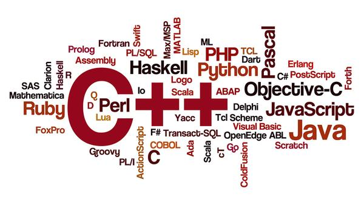

기계(컴퓨터)에게 명령 또는 연산을 시킬 목적으로 설계되어 기계와 의사소통을 할 수 있게 해주는 언어를 뜻한다. 그 결과, 사람이 원하는 작업을 컴퓨터가 수행할 수 있도록 프로그래밍 언어로 일련의 과정을 작성하여 일을 시킨다. 쉽게 말하면 컴퓨터를 부려먹기 위한 언어. 소프트웨어를 만드는데 기본이 되고, 이 소프트웨어는 논리 연산의 집합이기 때문에 수리 언어의 일종으로 보는 시각도 있다.
컴퓨터보다 먼저 등장하였으며 본격적인 연구는 1930년대 즈음부터 수학자들에 의해 기계적으로 계산 가능한 함수에 대한 연구가 진행된 데에서 비롯되었다. 그 결과 기계가 이해할 수 있는 언어가 탄생했으며, 바로 이 기계가 계산 가능하고 이해 가능한 언어를 실행하는 기계로 언어보다 나중에 발명된 것이 바로 현대적 의미의 컴퓨터이다.
- 등장배경과 역사
- 구조
- 분류(종류)